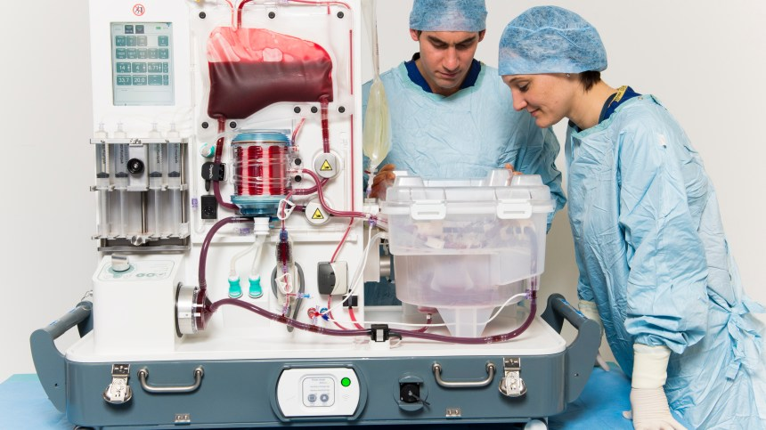
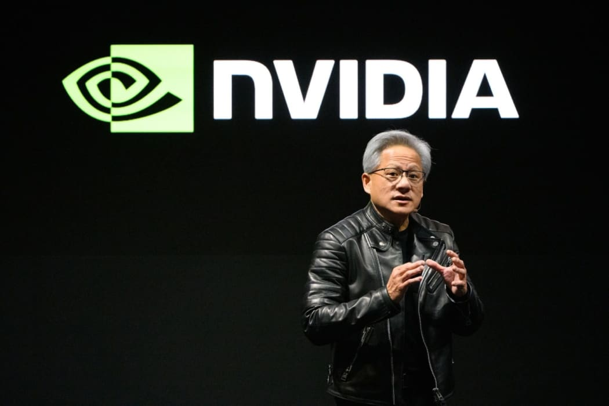
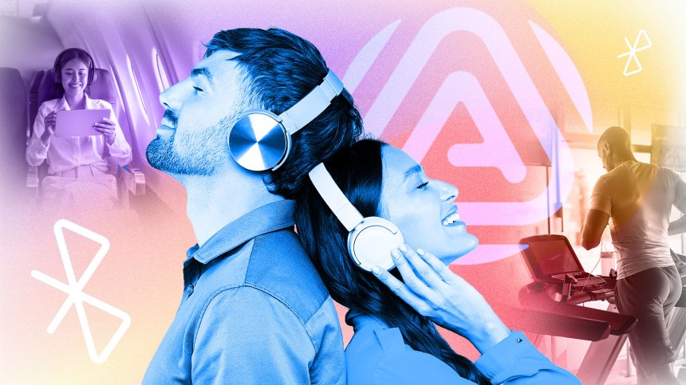

Inovasi Teknologi Terbaru yang Membentuk Masa Depan
Dunia teknologi tidak pernah berhenti berkembang, dengan kemajuan terobosan yang muncul setiap hari. Mulai dari dorongan Nvidia ke dalam robotika humanoid hingga berbagi audio Auracast yang revolusioner dari Bluetooth, inovasi mendefinisikan ulang interaksi kita dengan teknologi. Sementara itu, terobosan medis seperti alat pengawet organ tubuh OrganOx dan teknologi taktil untuk tunanetra menyoroti bagaimana teknologi meningkatkan kualitas hidup. Mari jelajahi beberapa perkembangan paling menarik yang membentuk masa depan.
OrganOx Mendapatkan $142 Juta untuk Ekspansi di Amerika Serikat

OrganOx, perusahaan rintisan dari Universitas Oxford yang berspesialisasi dalam perangkat medis untuk transplantasi hati, telah mengumpulkan $142 juta untuk mendanai ekspansinya di Amerika Serikat. Teknologi perusahaan ini mengawetkan organ donor menggunakan darah pada suhu tubuh normal, dan telah mendukung lebih dari 5.000 transplantasi hingga saat ini. Investasi ini juga akan memfasilitasi uji klinis untuk perangkat transplantasi ginjal dan penelitian terhadap hati babi yang direkayasa secara genetik.
Nvidia Akan Meluncurkan Komputer Jetson Thor untuk Robot
Humanoid

Nvidia akan merilis komputer Jetson Thor pada paruh pertama tahun 2025, yang bertujuan untuk memajukan robotika humanoid. Teknologi ini meningkatkan platform Jetson Nvidia yang sudah ada, yang dikenal sebagai komputer aplikasi AI yang ringkas, dan berfokus pada peningkatan otonomi robot dan interaksi manusia. Nvidia berkolaborasi dengan perusahaan-perusahaan seperti Siemens dan Universal Robots, memposisikan diri sebagai penyedia teknologi utama di sektor robotika.
Auracast: Merevolusi Berbagi Audio melalui Bluetooth

Auracast, sebuah teknologi Bluetooth baru, siap untuk mengubah berbagi audio dengan memungkinkan beberapa koneksi ke satu perangkat dengan headphone nirkabel. Inovasi ini memungkinkan pengguna untuk mendengarkan audio TV di ruang publik dan meningkatkan aksesibilitas bagi para tuna rungu dan tuna rungu. Auracast mengubah perangkat menjadi stasiun penyiaran, memfasilitasi koneksi audio secara real-time di berbagai tempat, termasuk bioskop dan stadion olahraga. Produsen seperti Samsung dan Sony telah mulai mengadopsi teknologi ini, dengan penggunaan yang lebih luas yang diantisipasi seiring dengan konsumen yang meng-upgrade perangkat mereka.